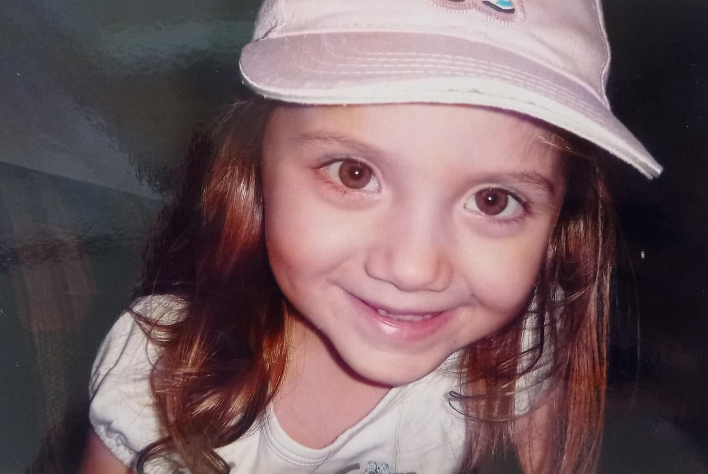

Ailemin ilk çocuğuyum. Benden küçük iki kardeşim var. Müzik dinlemeyi, yeni yerler keşfetmeyi, yakınlarımla vakit geçirmeyi, kitap okumayı, eğlemeyi ve gülmeyi çok severim. Yenilik ve değişikliğe her zaman açık biriyimdir.


Okuduğum bölüm zaman zaman zor gelse ve yorsa bile çok seviyorum. Bu bölüm hakkında yeni bilgiler öğrenip uygulamak çok zevkli.
Bölümümün tanıtım videosu burada mevcut, dilerseniz izleyebilirsiniz.
Disney'in filmlerini çok seviyorum. Özellikle animasyon filmlerine bayılırım. Canım ne zaman sıkkın olsa açar izlerim ve keyfim yerine gelir. İçlerinden en sevdiğim serisi ise Buz Devri.